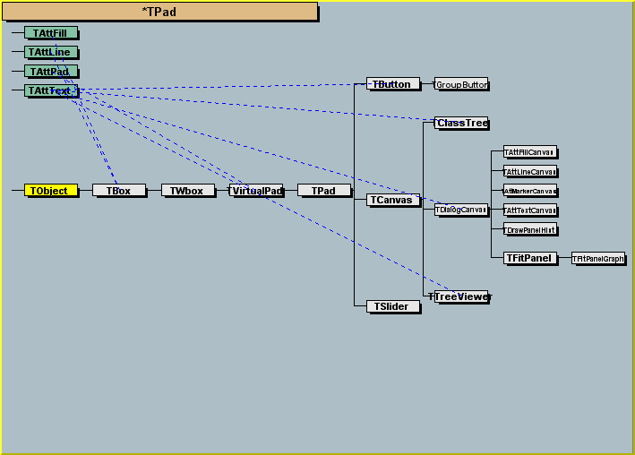
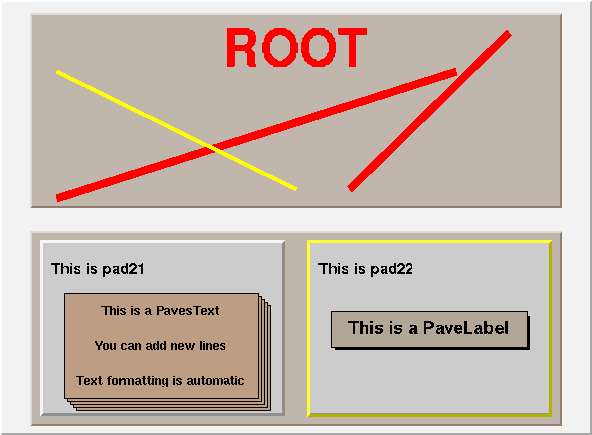
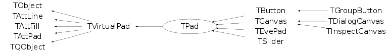

class TPad: public TVirtualPad
The Pad class is the most important graphics class in the ROOT system./*  */
A Pad is contained in a Canvas. A Pad may contain other pads (unlimited pad hierarchy). A pad is a linked list of primitives of any type (graphics objects, histograms, detectors, tracks, etc.). Adding a new element into a pad is in general performed by the Draw member function of the object classes. It is important to realize that the pad is a linked list of references to the original object. For example, in case of a histogram, the histogram.Draw() operation only stores a reference to the histogram object and not a graphical representation of this histogram. When the mouse is used to change (say the bin content), the bin content of the original histogram is changed !! The convention used in ROOT is that a Draw operation only adds a reference to the object. The effective drawing is performed when the canvas receives a signal to be painted. This signal is generally sent when typing carriage return in the command input or when a graphical operation has been performed on one of the pads of this canvas. When a Canvas/Pad is repainted, the member function Paint for all objects in the Pad linked list is invoked. When the mouse is moved on the Pad, The member function DistancetoPrimitive is called for all the elements in the pad. DistancetoPrimitive returns the distance in pixels to this object. when the object is within the distance window, the member function ExecuteEvent is called for this object. in ExecuteEvent, move, changes can be performed on the object. For examples of DistancetoPrimitive and ExecuteEvent functions, see classes TLine::DistancetoPrimitive, TLine::ExecuteEvent TBox::DistancetoPrimitive, TBox::ExecuteEvent TH1::DistancetoPrimitive, TH1::ExecuteEvent A Pad supports linear and log scales coordinate systems. The transformation coefficients are explained in TPad::ResizePad. An example of pads hierarchy is shown below:/*  */
Function Members (Methods)
public:
| TPad() | |
| TPad(const char* name, const char* title, Double_t xlow, Double_t ylow, Double_t xup, Double_t yup, Color_t color = -1, Short_t bordersize = -1, Short_t bordermode = -2) | |
| virtual | ~TPad() |
| virtual void | AbsCoordinates(Bool_t set) |
| virtual Double_t | AbsPixeltoX(Int_t px) |
| virtual void | AbsPixeltoXY(Int_t xpixel, Int_t ypixel, Double_t& x, Double_t& y) |
| virtual Double_t | AbsPixeltoY(Int_t py) |
| void | TObject::AbstractMethod(const char* method) const |
| virtual void | AddExec(const char* name, const char* command) |
| virtual void | TObject::AppendPad(Option_t* option = "") |
| static Bool_t | TQObject::AreAllSignalsBlocked() |
| Bool_t | TQObject::AreSignalsBlocked() const |
| virtual void | AutoExec() |
| static Bool_t | TQObject::BlockAllSignals(Bool_t b) |
| Bool_t | TQObject::BlockSignals(Bool_t b) |
| virtual void | Browse(TBrowser* b) |
| virtual TLegend* | BuildLegend(Double_t x1 = 0.5, Double_t y1 = 0.67, Double_t x2 = 0.88, Double_t y2 = 0.88, const char* title = "")MENU |
| virtual TVirtualPad* | cd(Int_t subpadnumber = 0)MENU |
| virtual void | TQObject::ChangedBy(const char* method)SIGNAL |
| static TClass* | Class() |
| virtual const char* | TObject::ClassName() const |
| virtual void | Clear(Option_t* option = "") |
| virtual Int_t | Clip(Float_t* x, Float_t* y, Float_t xclipl, Float_t yclipb, Float_t xclipr, Float_t yclipt) |
| virtual Int_t | Clip(Double_t* x, Double_t* y, Double_t xclipl, Double_t yclipb, Double_t xclipr, Double_t yclipt) |
| virtual Int_t | ClippingCode(Double_t x, Double_t y, Double_t xcl1, Double_t ycl1, Double_t xcl2, Double_t ycl2) |
| virtual Int_t | ClipPolygon(Int_t n, Double_t* x, Double_t* y, Int_t nn, Double_t* xc, Double_t* yc, Double_t xclipl, Double_t yclipb, Double_t xclipr, Double_t yclipt) |
| virtual TObject* | TObject::Clone(const char* newname = "") const |
| virtual void | Close(Option_t* option = "") |
| virtual void | Closed()SIGNAL |
| virtual void | CloseToolTip(TObject* tip) |
| void | TQObject::CollectClassSignalLists(TList& list, TClass* cls) |
| virtual Int_t | TObject::Compare(const TObject* obj) const |
| Bool_t | TQObject::Connect(const char* signal, const char* receiver_class, void* receiver, const char* slot) |
| static Bool_t | TQObject::Connect(TQObject* sender, const char* signal, const char* receiver_class, void* receiver, const char* slot) |
| static Bool_t | TQObject::Connect(const char* sender_class, const char* signal, const char* receiver_class, void* receiver, const char* slot) |
| virtual void | TQObject::Connected(const char*) |
| virtual void | TObject::Copy(TObject& object) const |
| virtual void | CopyPixmap() |
| virtual void | CopyPixmaps() |
| virtual TObject* | CreateToolTip(const TBox* b, const char* text, Long_t delayms) |
| virtual void | TObject::Delete(Option_t* option = "")MENU |
| virtual void | DeleteExec(const char* name) |
| virtual void | DeleteToolTip(TObject* tip) |
| virtual void | TQObject::Destroyed()SIGNAL |
| Bool_t | TQObject::Disconnect(const char* signal = 0, void* receiver = 0, const char* slot = 0) |
| static Bool_t | TQObject::Disconnect(TQObject* sender, const char* signal = 0, void* receiver = 0, const char* slot = 0) |
| static Bool_t | TQObject::Disconnect(const char* class_name, const char* signal, void* receiver = 0, const char* slot = 0) |
| virtual void | TQObject::Disconnected(const char*) |
| Int_t | TAttLine::DistancetoLine(Int_t px, Int_t py, Double_t xp1, Double_t yp1, Double_t xp2, Double_t yp2) |
| virtual void | Divide(Int_t nx = 1, Int_t ny = 1, Float_t xmargin = 0.01, Float_t ymargin = 0.01, Int_t color = 0)MENU |
| virtual void | Draw(Option_t* option = "") |
| virtual void | TObject::DrawClass() constMENU |
| virtual void | DrawClassObject(const TObject* obj, Option_t* option = "") |
| virtual TObject* | TObject::DrawClone(Option_t* option = "") constMENU |
| static void | DrawColorTable() |
| virtual void | DrawCrosshair() |
| virtual TH1F* | DrawFrame(Double_t xmin, Double_t ymin, Double_t xmax, Double_t ymax, const char* title = "") |
| virtual void | TObject::Dump() constMENU |
| void | TQObject::Emit(const char* signal) |
| void | TQObject::Emit(const char* signal, Long_t* paramArr) |
| void | TQObject::Emit(const char* signal, const char* params) |
| void | TQObject::Emit(const char* signal, Double_t param) |
| void | TQObject::Emit(const char* signal, Long_t param) |
| void | TQObject::Emit(const char* signal, Long64_t param) |
| void | TQObject::Emit(const char* signal, Bool_t param) |
| void | TQObject::Emit(const char* signal, Char_t param) |
| void | TQObject::Emit(const char* signal, UChar_t param) |
| void | TQObject::Emit(const char* signal, Short_t param) |
| void | TQObject::Emit(const char* signal, UShort_t param) |
| void | TQObject::Emit(const char* signal, Int_t param) |
| void | TQObject::Emit(const char* signal, UInt_t param) |
| void | TQObject::Emit(const char* signal, ULong_t param) |
| void | TQObject::Emit(const char* signal, ULong64_t param) |
| void | TQObject::Emit(const char* signal, Float_t param) |
| void | TQObject::EmitVA(const char* signal, Int_t nargs) |
| void | TQObject::EmitVA(const char* signal, Int_t nargs, va_list va) |
| virtual void | TObject::Error(const char* method, const char* msgfmt) const |
| virtual void | EventPave()SIGNAL |
| virtual void | TObject::Execute(const char* method, const char* params, Int_t* error = 0) |
| virtual void | TObject::Execute(TMethod* method, TObjArray* params, Int_t* error = 0) |
| virtual void | ExecuteEventAxis(Int_t event, Int_t px, Int_t py, TAxis* axis) |
| virtual void | TObject::Fatal(const char* method, const char* msgfmt) const |
| virtual TObject* | FindObject(const char* name) const |
| virtual TObject* | FindObject(const TObject* obj) const |
| virtual Double_t | GetAbsHNDC() const |
| virtual Double_t | GetAbsWNDC() const |
| virtual Double_t | GetAbsXlowNDC() const |
| virtual Double_t | GetAbsYlowNDC() const |
| Float_t | TAttPad::GetAfile() const |
| virtual Double_t | GetAspectRatio() const |
| Float_t | TAttPad::GetAstat() const |
| virtual Short_t | GetBorderMode() const |
| virtual Short_t | GetBorderSize() const |
| Float_t | TAttPad::GetBottomMargin() const |
| virtual TCanvas* | GetCanvas() const |
| virtual Int_t | GetCanvasID() const |
| virtual TCanvasImp* | GetCanvasImp() const |
| Int_t | GetCrosshair() const |
| virtual Option_t* | TObject::GetDrawOption() const |
| static Long_t | TObject::GetDtorOnly() |
| virtual Int_t | GetEvent() const |
| virtual Int_t | GetEventX() const |
| virtual Int_t | GetEventY() const |
| virtual Color_t | TAttFill::GetFillColor() const |
| virtual Style_t | TAttFill::GetFillStyle() const |
| virtual TFrame* | GetFrame() |
| Int_t | TAttPad::GetFrameBorderMode() const |
| Width_t | TAttPad::GetFrameBorderSize() const |
| Color_t | TAttPad::GetFrameFillColor() const |
| Style_t | TAttPad::GetFrameFillStyle() const |
| Color_t | TAttPad::GetFrameLineColor() const |
| Style_t | TAttPad::GetFrameLineStyle() const |
| Width_t | TAttPad::GetFrameLineWidth() const |
| virtual Int_t | GetGLDevice() |
| virtual Bool_t | GetGridx() const |
| virtual Bool_t | GetGridy() const |
| virtual Color_t | GetHighLightColor() const |
| virtual Double_t | GetHNDC() const |
| virtual const char* | TObject::GetIconName() const |
| Float_t | TAttPad::GetLeftMargin() const |
| virtual Color_t | TAttLine::GetLineColor() const |
| virtual Style_t | TAttLine::GetLineStyle() const |
| virtual Width_t | TAttLine::GetLineWidth() const |
| TList* | TQObject::GetListOfClassSignals() const |
| TList* | TQObject::GetListOfConnections() const |
| virtual TList* | GetListOfExecs() const |
| virtual TList* | GetListOfPrimitives() const |
| TList* | TQObject::GetListOfSignals() const |
| virtual Int_t | GetLogx() const |
| virtual Int_t | GetLogy() const |
| virtual Int_t | GetLogz() const |
| static Int_t | GetMaxPickDistance() |
| virtual TVirtualPad* | GetMother() const |
| virtual const char* | GetName() const |
| virtual Int_t | GetNumber() const |
| virtual char* | TObject::GetObjectInfo(Int_t px, Int_t py) const |
| static Bool_t | TObject::GetObjectStat() |
| virtual Option_t* | TObject::GetOption() const |
| virtual TVirtualPad* | GetPad(Int_t subpadnumber) const |
| virtual Int_t | GetPadPaint() const |
| virtual void | GetPadPar(Double_t& xlow, Double_t& ylow, Double_t& xup, Double_t& yup) |
| virtual TObject* | GetPadPointer() const |
| virtual TVirtualPad* | GetPadSave() const |
| virtual TVirtualPadPainter* | GetPainter() |
| virtual Double_t | GetPhi() const |
| virtual Int_t | GetPixmapID() const |
| virtual TObject* | GetPrimitive(const char* name) const |
| virtual void | GetRange(Double_t& x1, Double_t& y1, Double_t& x2, Double_t& y2) |
| virtual void | GetRangeAxis(Double_t& xmin, Double_t& ymin, Double_t& xmax, Double_t& ymax) |
| Float_t | TAttPad::GetRightMargin() const |
| virtual TObject* | GetSelected() const |
| virtual TVirtualPad* | GetSelectedPad() const |
| virtual Double_t | GetTheta() const |
| virtual Int_t | GetTickx() const |
| virtual Int_t | GetTicky() const |
| virtual const char* | GetTitle() const |
| Float_t | TAttPad::GetTopMargin() const |
| virtual UInt_t | TObject::GetUniqueID() const |
| virtual Double_t | GetUxmax() const |
| virtual Double_t | GetUxmin() const |
| virtual Double_t | GetUymax() const |
| virtual Double_t | GetUymin() const |
| virtual TView* | GetView() const |
| virtual TObject* | GetView3D() const |
| virtual TVirtualViewer3D* | GetViewer3D(Option_t* type = "") |
| virtual TVirtualPad* | GetVirtCanvas() const |
| virtual UInt_t | GetWh() const |
| virtual Double_t | GetWNDC() const |
| virtual UInt_t | GetWw() const |
| virtual Double_t | GetX1() const |
| virtual Double_t | GetX2() const |
| Float_t | TAttPad::GetXfile() const |
| virtual Double_t | GetXlowNDC() const |
| Float_t | TAttPad::GetXstat() const |
| virtual Double_t | GetY1() const |
| virtual Double_t | GetY2() const |
| Float_t | TAttPad::GetYfile() const |
| virtual Double_t | GetYlowNDC() const |
| Float_t | TAttPad::GetYstat() const |
| virtual Bool_t | TObject::HandleTimer(TTimer* timer) |
| virtual Bool_t | TQObject::HasConnection(const char* signal_name) const |
| virtual Bool_t | HasCrosshair() const |
| virtual Bool_t | HasFixedAspectRatio() const |
| virtual ULong_t | Hash() const |
| virtual Bool_t | HasViewer3D() const |
| virtual void | HighLight(Color_t col = kRed, Bool_t set = kTRUE) |
| virtual void | TQObject::HighPriority(const char* signal_name, const char* slot_name = 0) |
| virtual void | TObject::Info(const char* method, const char* msgfmt) const |
| virtual Bool_t | TObject::InheritsFrom(const char* classname) const |
| virtual Bool_t | TObject::InheritsFrom(const TClass* cl) const |
| virtual void | TObject::Inspect() constMENU |
| void | TObject::InvertBit(UInt_t f) |
| virtual TClass* | IsA() const |
| virtual Bool_t | IsBatch() const |
| Bool_t | TVirtualPad::IsBeingResized() const |
| virtual Bool_t | IsEditable() const |
| virtual Bool_t | TObject::IsEqual(const TObject* obj) const |
| virtual Bool_t | IsFolder() const |
| virtual Bool_t | IsModified() const |
| Bool_t | TObject::IsOnHeap() const |
| virtual Bool_t | IsRetained() const |
| virtual Bool_t | TObject::IsSortable() const |
| virtual Bool_t | TAttFill::IsTransparent() const |
| virtual Bool_t | IsVertical() const |
| Bool_t | TObject::IsZombie() const |
| static void | TQObject::LoadRQ_OBJECT() |
| virtual void | TQObject::LowPriority(const char* signal_name, const char* slot_name = 0) |
| virtual void | ls(Option_t* option = "") const |
| void | TObject::MayNotUse(const char* method) const |
| virtual void | TQObject::Message(const char* msg)SIGNAL |
| virtual void | Modified(Bool_t flag = 1)SIGNAL |
| virtual void | TAttLine::Modify() |
| virtual Bool_t | TObject::Notify() |
| virtual Int_t | TQObject::NumberOfConnections() const |
| virtual Int_t | TQObject::NumberOfSignals() const |
| void | TObject::Obsolete(const char* method, const char* asOfVers, const char* removedFromVers) const |
| virtual Bool_t | OpaqueMoving() const |
| virtual Bool_t | OpaqueResizing() const |
| static void | TObject::operator delete(void* ptr) |
| static void | TObject::operator delete(void* ptr, void* vp) |
| static void | TObject::operator delete[](void* ptr) |
| static void | TObject::operator delete[](void* ptr, void* vp) |
| void* | TObject::operator new(size_t sz) |
| void* | TObject::operator new(size_t sz, void* vp) |
| void* | TObject::operator new[](size_t sz) |
| void* | TObject::operator new[](size_t sz, void* vp) |
| static TVirtualPad*& | TVirtualPad::Pad() |
| virtual Bool_t | TVirtualPad::PadInHighlightMode() const |
| virtual Bool_t | TVirtualPad::PadInSelectionMode() const |
| virtual Double_t | PadtoX(Double_t x) const |
| virtual Double_t | PadtoY(Double_t y) const |
| virtual void | Paint(Option_t* option = "") |
| virtual void | PaintBox(Double_t x1, Double_t y1, Double_t x2, Double_t y2, Option_t* option = "") |
| virtual void | PaintFillArea(Int_t n, Float_t* x, Float_t* y, Option_t* option = "") |
| virtual void | PaintFillArea(Int_t n, Double_t* x, Double_t* y, Option_t* option = "") |
| void | PaintFillAreaHatches(Int_t n, Double_t* x, Double_t* y, Int_t FillStyle) |
| void | PaintHatches(Double_t dy, Double_t angle, Int_t nn, Double_t* xx, Double_t* yy) |
| virtual void | PaintLine(Double_t x1, Double_t y1, Double_t x2, Double_t y2) |
| virtual void | PaintLine3D(Float_t* p1, Float_t* p2) |
| virtual void | PaintLine3D(Double_t* p1, Double_t* p2) |
| virtual void | PaintLineNDC(Double_t u1, Double_t v1, Double_t u2, Double_t v2) |
| virtual void | PaintModified() |
| virtual void | PaintPadFrame(Double_t xmin, Double_t ymin, Double_t xmax, Double_t ymax) |
| virtual void | PaintPolyLine(Int_t n, Float_t* x, Float_t* y, Option_t* option = "") |
| virtual void | PaintPolyLine(Int_t n, Double_t* x, Double_t* y, Option_t* option = "") |
| virtual void | PaintPolyLine3D(Int_t n, Double_t* p) |
| virtual void | PaintPolyLineNDC(Int_t n, Double_t* x, Double_t* y, Option_t* option = "") |
| virtual void | PaintPolyMarker(Int_t n, Float_t* x, Float_t* y, Option_t* option = "") |
| virtual void | PaintPolyMarker(Int_t n, Double_t* x, Double_t* y, Option_t* option = "") |
| virtual void | PaintText(Double_t x, Double_t y, const char* text) |
| virtual void | PaintTextNDC(Double_t u, Double_t v, const char* text) |
| virtual TPad* | Pick(Int_t px, Int_t py, TObjLink*& pickobj) |
| virtual Double_t | PixeltoX(Int_t px) |
| virtual void | PixeltoXY(Int_t xpixel, Int_t ypixel, Double_t& x, Double_t& y) |
| virtual Double_t | PixeltoY(Int_t py) |
| virtual void | Pop()MENU |
| virtual void | TVirtualPad::PopTopLevelSelectable() |
| virtual void | Print(const char* filename = "") const |
| virtual void | Print(const char* filename, Option_t* option) |
| virtual void | TVirtualPad::PushSelectableObject(TObject* obj) |
| virtual void | TVirtualPad::PushTopLevelSelectable(TObject* top) |
| virtual void | Range(Double_t x1, Double_t y1, Double_t x2, Double_t y2)MENU |
| virtual void | RangeAxis(Double_t xmin, Double_t ymin, Double_t xmax, Double_t ymax) |
| virtual void | RangeAxisChanged()SIGNAL |
| virtual void | RangeChanged()SIGNAL |
| virtual Int_t | TObject::Read(const char* name) |
| virtual void | RecordLatex(const TObject* obj)SIGNAL |
| virtual void | RecordPave(const TObject* obj)SIGNAL |
| virtual void | RecursiveRemove(TObject* obj) |
| virtual void | RedrawAxis(Option_t* option = "") |
| virtual void | ReleaseViewer3D(Option_t* type = "") |
| virtual void | TAttFill::ResetAttFill(Option_t* option = "") |
| virtual void | TAttLine::ResetAttLine(Option_t* option = "") |
| virtual void | TAttPad::ResetAttPad(Option_t* option = "") |
| void | TObject::ResetBit(UInt_t f) |
| virtual void | ResetToolTip(TObject* tip) |
| virtual void | ResetView3D(TObject* view = 0) |
| virtual void | ResizePad(Option_t* option = "") |
| virtual void | SaveAs(const char* filename = "", Option_t* option = "") constMENU |
| virtual void | TAttFill::SaveFillAttributes(ostream& out, const char* name, Int_t coldef = 1, Int_t stydef = 1001) |
| virtual void | TAttLine::SaveLineAttributes(ostream& out, const char* name, Int_t coldef = 1, Int_t stydef = 1, Int_t widdef = 1) |
| virtual void | TAttPad::SetAfile(Float_t afile) |
| virtual void | TAttPad::SetAstat(Float_t astat) |
| virtual void | SetAttFillPS(Color_t color, Style_t style) |
| virtual void | SetAttLinePS(Color_t color, Style_t style, Width_t lwidth) |
| virtual void | SetAttMarkerPS(Color_t color, Style_t style, Size_t msize) |
| virtual void | SetAttTextPS(Int_t align, Float_t angle, Color_t color, Style_t font, Float_t tsize) |
| void | TObject::SetBit(UInt_t f) |
| void | TObject::SetBit(UInt_t f, Bool_t set) |
| virtual void | SetBorderMode(Short_t bordermode)MENU |
| virtual void | SetBorderSize(Short_t bordersize)MENU |
| virtual void | TAttPad::SetBottomMargin(Float_t bottommargin) |
| virtual void | SetCanvas(TCanvas* c) |
| virtual void | SetCanvasSize(UInt_t ww, UInt_t wh) |
| virtual void | SetCopyGLDevice(Bool_t copy) |
| virtual void | SetCrosshair(Int_t crhair = 1)TOGGLE |
| virtual void | SetCursor(ECursor cursor) |
| virtual void | SetDoubleBuffer(Int_t mode = 1) |
| virtual void | SetDrawOption(Option_t* option = "") |
| static void | TObject::SetDtorOnly(void* obj) |
| virtual void | SetEditable(Bool_t mode = kTRUE)TOGGLE |
| virtual void | TAttFill::SetFillAttributes()MENU |
| virtual void | TAttFill::SetFillColor(Color_t fcolor) |
| virtual void | SetFillStyle(Style_t fstyle) |
| virtual void | SetFixedAspectRatio(Bool_t fixed = kTRUE)TOGGLE |
| void | TAttPad::SetFrameBorderMode(Int_t mode = 1) |
| void | TAttPad::SetFrameBorderSize(Width_t size = 1) |
| void | TAttPad::SetFrameFillColor(Color_t color = 1) |
| void | TAttPad::SetFrameFillStyle(Style_t styl = 0) |
| void | TAttPad::SetFrameLineColor(Color_t color = 1) |
| void | TAttPad::SetFrameLineStyle(Style_t styl = 0) |
| void | TAttPad::SetFrameLineWidth(Width_t width = 1) |
| virtual void | SetGLDevice(Int_t dev) |
| virtual void | SetGrid(Int_t valuex = 1, Int_t valuey = 1) |
| virtual void | SetGridx(Int_t value = 1)TOGGLE |
| virtual void | SetGridy(Int_t value = 1)TOGGLE |
| virtual void | TAttPad::SetLeftMargin(Float_t leftmargin) |
| virtual void | TAttLine::SetLineAttributes()MENU |
| virtual void | TAttLine::SetLineColor(Color_t lcolor) |
| virtual void | TAttLine::SetLineStyle(Style_t lstyle) |
| virtual void | TAttLine::SetLineWidth(Width_t lwidth) |
| virtual void | SetLogx(Int_t value = 1)TOGGLE |
| virtual void | SetLogy(Int_t value = 1)TOGGLE |
| virtual void | SetLogz(Int_t value = 1)TOGGLE |
| virtual void | TAttPad::SetMargin(Float_t left, Float_t right, Float_t bottom, Float_t top) |
| static void | SetMaxPickDistance(Int_t maxPick = 5) |
| virtual void | SetName(const char* name)MENU |
| virtual void | SetNumber(Int_t number) |
| static void | TObject::SetObjectStat(Bool_t stat) |
| virtual void | SetPad(Double_t xlow, Double_t ylow, Double_t xup, Double_t yup) |
| virtual void | SetPad(const char* name, const char* title, Double_t xlow, Double_t ylow, Double_t xup, Double_t yup, Color_t color = 35, Short_t bordersize = 5, Short_t bordermode = -1) |
| virtual void | SetPhi(Double_t phi = 30) |
| virtual void | TAttPad::SetRightMargin(Float_t rightmargin) |
| virtual void | SetSelected(TObject* obj) |
| virtual void | SetTheta(Double_t theta = 30) |
| virtual void | SetTicks(Int_t valuex = 1, Int_t valuey = 1) |
| virtual void | SetTickx(Int_t value = 1)TOGGLE |
| virtual void | SetTicky(Int_t value = 1)TOGGLE |
| virtual void | SetTitle(const char* title = "") |
| virtual void | SetToolTipText(const char* text, Long_t delayms = 1000) |
| virtual void | TAttPad::SetTopMargin(Float_t topmargin) |
| virtual void | TObject::SetUniqueID(UInt_t uid) |
| virtual void | SetVertical(Bool_t vert = kTRUE) |
| virtual void | SetView(TView* view = 0) |
| virtual void | SetViewer3D(TVirtualViewer3D* viewer3d) |
| virtual void | TAttPad::SetXfile(Float_t xfile) |
| virtual void | TAttPad::SetXstat(Float_t xstat) |
| virtual void | TAttPad::SetYfile(Float_t yfile) |
| virtual void | TAttPad::SetYstat(Float_t ystat) |
| virtual void | ShowMembers(TMemberInspector& insp) |
| virtual void | StartEditing()SIGNAL |
| virtual void | Streamer(TBuffer& b) |
| void | StreamerNVirtual(TBuffer& b) |
| virtual void | TObject::SysError(const char* method, const char* msgfmt) const |
| Bool_t | TObject::TestBit(UInt_t f) const |
| Int_t | TObject::TestBits(UInt_t f) const |
| virtual void | Update() |
| virtual void | UseCurrentStyle()MENU |
| virtual Int_t | UtoAbsPixel(Double_t u) const |
| virtual Int_t | UtoPixel(Double_t u) const |
| virtual Int_t | VtoAbsPixel(Double_t v) const |
| virtual Int_t | VtoPixel(Double_t v) const |
| virtual TObject* | WaitPrimitive(const char* pname = "", const char* emode = "") |
| virtual void | TObject::Warning(const char* method, const char* msgfmt) const |
| virtual Int_t | TObject::Write(const char* name = 0, Int_t option = 0, Int_t bufsize = 0) |
| virtual Int_t | TObject::Write(const char* name = 0, Int_t option = 0, Int_t bufsize = 0) const |
| virtual void | x3d(Option_t* type = "") |
| virtual Int_t | XtoAbsPixel(Double_t x) const |
| virtual Double_t | XtoPad(Double_t x) const |
| virtual Int_t | XtoPixel(Double_t x) const |
| virtual void | XYtoAbsPixel(Double_t x, Double_t y, Int_t& xpixel, Int_t& ypixel) const |
| virtual void | XYtoPixel(Double_t x, Double_t y, Int_t& xpixel, Int_t& ypixel) const |
| virtual Int_t | YtoAbsPixel(Double_t y) const |
| virtual Double_t | YtoPad(Double_t y) const |
| virtual Int_t | YtoPixel(Double_t y) const |
protected:
| static Int_t | TQObject::CheckConnectArgs(TQObject* sender, TClass* sender_class, const char* signal, TClass* receiver_class, const char* slot) |
| static Bool_t | TQObject::ConnectToClass(TQObject* sender, const char* signal, TClass* receiver_class, void* receiver, const char* slot) |
| static Bool_t | TQObject::ConnectToClass(const char* sender_class, const char* signal, TClass* receiver_class, void* receiver, const char* slot) |
| void | DestroyExternalViewer3D() |
| virtual Int_t | DistancetoPrimitive(Int_t px, Int_t py) |
| virtual void | TObject::DoError(int level, const char* location, const char* fmt, va_list va) const |
| virtual void | ExecuteEvent(Int_t event, Int_t px, Int_t py) |
| virtual void* | TVirtualPad::GetSender() |
| virtual const char* | TQObject::GetSenderClassName() const |
| virtual void | HideToolTip(Int_t event) |
| void | TObject::MakeZombie() |
| void | PaintBorder(Color_t color, Bool_t tops) |
| virtual void | PaintBorderPS(Double_t xl, Double_t yl, Double_t xt, Double_t yt, Int_t bmode, Int_t bsize, Int_t dark, Int_t light) |
| void | PaintDate() |
| virtual void | SavePrimitive(ostream& out, Option_t* option = "") |
| virtual void | SetBatch(Bool_t batch = kTRUE) |
Data Members
public:
| enum { | kFraming | |
| kHori | ||
| kClipFrame | ||
| kPrintingPS | ||
| kCannotMove | ||
| kClearAfterCR | ||
| }; | ||
| enum TObject::EStatusBits { | kCanDelete | |
| kMustCleanup | ||
| kObjInCanvas | ||
| kIsReferenced | ||
| kHasUUID | ||
| kCannotPick | ||
| kNoContextMenu | ||
| kInvalidObject | ||
| }; | ||
| enum TObject::[unnamed] { | kIsOnHeap | |
| kNotDeleted | ||
| kZombie | ||
| kBitMask | ||
| kSingleKey | ||
| kOverwrite | ||
| kWriteDelete | ||
| }; |
protected:
| Bool_t | fAbsCoord | Use absolute coordinates |
| Double_t | fAbsHNDC | Absolute Height of pad along Y in NDC |
| Double_t | fAbsPixeltoXk | Conversion coefficient for absolute pixel to X World |
| Double_t | fAbsPixeltoYk | Conversion coefficient for absolute pixel to Y World |
| Double_t | fAbsWNDC | Absolute Width of pad along X in NDC |
| Double_t | fAbsXlowNDC | Absolute X top left corner of pad in NDC [0,1] |
| Double_t | fAbsYlowNDC | Absolute Y top left corner of pad in NDC [0,1] |
| Float_t | TAttPad::fAfile | Alignment for the file name |
| Double_t | fAspectRatio | ratio of w/h in case of fixed ratio |
| Float_t | TAttPad::fAstat | Alignment for the statistics |
| Short_t | fBorderMode | Bordermode (-1=down, 0 = no border, 1=up) |
| Short_t | fBorderSize | pad bordersize in pixels |
| Float_t | TAttPad::fBottomMargin | BottomMargin |
| TCanvas* | fCanvas | ! Pointer to mother canvas |
| Bool_t | fCopyGLDevice | ! |
| Int_t | fCrosshair | Crosshair type (0 if no crosshair requested) |
| Int_t | fCrosshairPos | Position of crosshair |
| Bool_t | fEditable | True if canvas is editable |
| Bool_t | fEmbeddedGL | ! |
| TList* | fExecs | List of commands to be executed when a pad event occurs |
| Color_t | TAttFill::fFillColor | fill area color |
| Style_t | TAttFill::fFillStyle | fill area style |
| Bool_t | fFixedAspectRatio | True if fixed aspect ratio |
| TFrame* | fFrame | ! Pointer to 2-D frame (if one exists) |
| Int_t | TAttPad::fFrameBorderMode | pad frame border mode |
| Width_t | TAttPad::fFrameBorderSize | pad frame border size |
| Color_t | TAttPad::fFrameFillColor | pad frame fill color |
| Style_t | TAttPad::fFrameFillStyle | pad frame fill style |
| Color_t | TAttPad::fFrameLineColor | pad frame line color |
| Style_t | TAttPad::fFrameLineStyle | pad frame line style |
| Width_t | TAttPad::fFrameLineWidth | pad frame line width |
| Int_t | fGLDevice | ! OpenGL off-screen pixmap identifier |
| Bool_t | fGridx | Set to true if grid along X |
| Bool_t | fGridy | Set to true if grid along Y |
| Double_t | fHNDC | Height of pad along Y in NDC |
| Float_t | TAttPad::fLeftMargin | LeftMargin |
| Color_t | TAttLine::fLineColor | line color |
| Style_t | TAttLine::fLineStyle | line style |
| Width_t | TAttLine::fLineWidth | line width |
| TList* | TQObject::fListOfConnections | ! list of connections to this object |
| TList* | TQObject::fListOfSignals | ! list of signals from this object |
| Int_t | fLogx | (=0 if X linear scale, =1 if log scale) |
| Int_t | fLogy | (=0 if Y linear scale, =1 if log scale) |
| Int_t | fLogz | (=0 if Z linear scale, =1 if log scale) |
| Bool_t | fModified | Set to true when pad is modified |
| TPad* | fMother | ! pointer to mother of the list |
| TString | fName | Pad name |
| Int_t | fNumber | pad number identifier |
| Int_t | fPadPaint | Set to 1 while painting the pad |
| TObject* | fPadPointer | ! free pointer |
| TObject* | fPadView3D | ! 3D View of this TPad |
| Double_t | fPhi | phi angle to view as lego/surface |
| Double_t | fPixeltoX | xworld = fPixeltoXk + fPixeltoX*xpixel |
| Double_t | fPixeltoXk | Conversion coefficient for pixel to X World |
| Double_t | fPixeltoY | yworld = fPixeltoYk + fPixeltoY*ypixel |
| Double_t | fPixeltoYk | Conversion coefficient for pixel to Y World |
| Int_t | fPixmapID | ! Off-screen pixmap identifier |
| TList* | fPrimitives | ->List of primitives (subpads) |
| Bool_t | TVirtualPad::fResizing | !true when resizing the pad |
| Float_t | TAttPad::fRightMargin | RightMargin |
| Bool_t | TQObject::fSignalsBlocked | ! flag used for suppression of signals |
| Double_t | fTheta | theta angle to view as lego/surface |
| Int_t | fTickx | Set to 1 if tick marks along X |
| Int_t | fTicky | Set to 1 if tick marks along Y |
| TString | fTitle | Pad title |
| Float_t | TAttPad::fTopMargin | TopMargin |
| Double_t | fUtoAbsPixelk | Conversion coefficient for U NDC to absolute pixel |
| Double_t | fUtoPixel | xpixel = fUtoPixelk + fUtoPixel*undc |
| Double_t | fUtoPixelk | Conversion coefficient for U NDC to pixel |
| Double_t | fUxmax | Maximum value on the X axis |
| Double_t | fUxmin | Minimum value on the X axis |
| Double_t | fUymax | Maximum value on the Y axis |
| Double_t | fUymin | Minimum value on the Y axis |
| TView* | fView | ! Pointer to 3-D view (if one exists) |
| TVirtualViewer3D* | fViewer3D | ! Current 3D viewer |
| Double_t | fVtoAbsPixelk | Conversion coefficient for V NDC to absolute pixel |
| Double_t | fVtoPixel | ypixel = fVtoPixelk + fVtoPixel*vndc |
| Double_t | fVtoPixelk | Conversion coefficient for V NDC to pixel |
| Double_t | fWNDC | Width of pad along X in NDC |
| Double_t | fX1 | X of lower X coordinate |
| Double_t | fX2 | X of upper X coordinate |
| Float_t | TAttPad::fXfile | X position where to draw the file name |
| Double_t | fXlowNDC | X bottom left corner of pad in NDC [0,1] |
| Float_t | TAttPad::fXstat | X position where to draw the statistics |
| Double_t | fXtoAbsPixelk | Conversion coefficient for X World to absolute pixel |
| Double_t | fXtoPixel | xpixel = fXtoPixelk + fXtoPixel*xworld |
| Double_t | fXtoPixelk | Conversion coefficient for X World to pixel |
| Double_t | fY1 | Y of lower Y coordinate |
| Double_t | fY2 | Y of upper Y coordinate |
| Float_t | TAttPad::fYfile | Y position where to draw the file name |
| Double_t | fYlowNDC | Y bottom left corner of pad in NDC [0,1] |
| Float_t | TAttPad::fYstat | Y position where to draw the statistics |
| Double_t | fYtoAbsPixelk | Conversion coefficient for Y World to absolute pixel |
| Double_t | fYtoPixel | ypixel = fYtoPixelk + fYtoPixel*yworld |
| Double_t | fYtoPixelk | Conversion coefficient for Y World to pixel |
| static Bool_t | TQObject::fgAllSignalsBlocked | flag used for suppression of all signals |
| static Int_t | fgMaxPickDistance | Maximum Pick Distance |
private:
| TObject* | fTip | ! tool tip associated with box |
Class Charts
{kind=link}
{kind=link}
{kind=link}
{kind=link}

Function documentation
TPad(const char* name, const char* title, Double_t xlow, Double_t ylow, Double_t xup, Double_t yup, Color_t color = -1, Short_t bordersize = -1, Short_t bordermode = -2)
Pad constructor. A pad is a linked list of primitives. A pad is contained in a canvas. It may contain other pads. A pad has attributes. When a pad is created, the attributes defined in the current style are copied to the pad attributes. xlow [0,1] is the position of the bottom left point of the pad expressed in the mother pad reference system ylow [0,1] is the Y position of this point. xup [0,1] is the x position of the top right point of the pad expressed in the mother pad reference system yup [0,1] is the Y position of this point. the bordersize is in pixels bordermode = -1 box looks as it is behind the screen bordermode = 0 no special effects bordermode = 1 box looks as it is in front of the screen
void AddExec(const char* name, const char* command)
Add a new TExec object to the list of Execs. When an event occurs in the pad (mouse click, etc) the list of CINT commands in the list of Execs are executed via TPad::AutoExec. When a pad event occurs (mouse move, click, etc) all the commands contained in the fExecs list are executed in the order found in the list. This facility is activated by default. It can be deactivated by using the canvas "Option" menu. The following examples of TExec commands are provided in the tutorials: macros exec1.C and exec2.C. Example1 of use of exec1.C Root > TFile f("hsimple.root") Root > hpx.Draw() Root > c1.AddExec("ex1",".x exec1.C") At this point you can use the mouse to click on the contour of the histogram hpx. When the mouse is clicked, the bin number and its contents are printed. Example2 of use of exec1.C Root > TFile f("hsimple.root") Root > hpxpy.Draw() Root > c1.AddExec("ex2",".x exec2.C") When moving the mouse in the canvas, a second canvas shows the projection along X of the bin corresponding to the Y position of the mouse. The resulting histogram is fitted with a gaussian. A "dynamic" line shows the current bin position in Y. This more elaborated example can be used as a starting point to develop more powerful interactive applications exploiting CINT as a development engine.
TLegend * BuildLegend(Double_t x1 = 0.5, Double_t y1 = 0.67, Double_t x2 = 0.88, Double_t y2 = 0.88, const char* title = "")
Build a legend from the graphical objects in the pad A simple method to to build automatically a TLegend from the primitives in a TPad. Only those deriving from TAttLine, TAttMarker and TAttFill are added, excluding TPave and TFrame derived classes. x1, y1, x2, y2 are the Tlegend coordinates. title is the legend title. By default it is " ". If the pad contains some TMultiGraph or THStack the individual graphs or histograms in them are added to the TLegend.
TVirtualPad * cd(Int_t subpadnumber = 0)
Set Current pad. When a canvas/pad is divided via TPad::Divide, one can directly set the current path to one of the subdivisions. See TPad::Divide for the convention to number subpads. Returns the new current pad, or 0 in case of failure. For example: c1.Divide(2,3); // create 6 pads (2 divisions along x, 3 along y). To set the current pad to the bottom right pad, do c1.cd(6); Note1: c1.cd() is equivalent to c1.cd(0) and sets the current pad to c1 itself. Note2: after a statement like c1.cd(6), the global variable gPad points to the current pad. One can use gPad to set attributes of the current pad. Note3: One can get a pointer to one of the sub-pads of pad with: TPad *subpad = (TPad*)pad->GetPad(subpadnumber);
void Clear(Option_t* option = "")
Delete all pad primitives. If the bit kClearAfterCR has been set for this pad, the Clear function will execute only after having pressed a CarriageReturn Set the bit with mypad->SetBit(TPad::kClearAfterCR)
Int_t Clip(Float_t* x, Float_t* y, Float_t xclipl, Float_t yclipb, Float_t xclipr, Float_t yclipt)
Clipping routine: Cohen Sutherland algorithm. If Clip ==2 the segment is outside the boundary. If Clip ==1 the segment has one point outside the boundary. If Clip ==0 the segment is inside the boundary. _Input parameters: x[2], y[2] : Segment coordinates xclipl, yclipb, xclipr, yclipt : Clipping boundary _Output parameters: x[2], y[2] : New segment coordinates
Int_t Clip(Double_t* x, Double_t* y, Double_t xclipl, Double_t yclipb, Double_t xclipr, Double_t yclipt)
Clipping routine: Cohen Sutherland algorithm. If Clip ==2 the segment is outside the boundary. If Clip ==1 the segment has one point outside the boundary. If Clip ==0 the segment is inside the boundary. _Input parameters: x[2], y[2] : Segment coordinates xclipl, yclipb, xclipr, yclipt : Clipping boundary _Output parameters: x[2], y[2] : New segment coordinates
Int_t ClippingCode(Double_t x, Double_t y, Double_t xcl1, Double_t ycl1, Double_t xcl2, Double_t ycl2)
Int_t ClipPolygon(Int_t n, Double_t* x, Double_t* y, Int_t nn, Double_t* xc, Double_t* yc, Double_t xclipl, Double_t yclipb, Double_t xclipr, Double_t yclipt)
Clip polygon using the Sutherland-Hodgman algorithm. Input parameters: n: Number of points in the polygon to be clipped x[n], y[n] : Polygon do be clipped vertices xclipl, yclipb, xclipr, yclipt : Clipping boundary Output parameters: nn: number of points in xc and yc xc, yc: clipped polygon vertices. The Int_t returned by this function is the number of points in the clipped polygon. These vectors must be allocated by the calling function. A size of 2*n for each is enough. Sutherland and Hodgman's polygon-clipping algorithm uses a divide-and-conquer strategy: It solves a series of simple and identical problems that, when combined, solve the overall problem. The simple problem is to clip a polygon against a single infinite clip edge. Four clip edges, each defining one boundary of the clip rectangle, successively clip a polygon against a clip rectangle. Steps of Sutherland-Hodgman's polygon-clipping algorithm: * Polygons can be clipped against each edge of the window one at a time. Windows/edge intersections, if any, are easy to find since the X or Y coordinates are already known. * Vertices which are kept after clipping against one window edge are saved for clipping against the remaining edges. * Note that the number of vertices usually changes and will often increases. The clip boundary determines a visible and invisible region. The edges from vertex i to vertex i+1 can be one of four types: * Case 1 : Wholly inside visible region - save endpoint * Case 2 : Exit visible region - save the intersection * Case 3 : Wholly outside visible region - save nothing * Case 4 : Enter visible region - save intersection and endpoint
Int_t DistancetoPrimitive(Int_t px, Int_t py)
Compute distance from point px,py to a box. Compute the closest distance of approach from point px,py to the edges of this pad. The distance is computed in pixels units.
void Divide(Int_t nx = 1, Int_t ny = 1, Float_t xmargin = 0.01, Float_t ymargin = 0.01, Int_t color = 0)
Automatic pad generation by division.
The current canvas is divided in nx by ny equal divisions (pads).
xmargin is the space along x between pads in percent of canvas.
ymargin is the space along y between pads in percent of canvas.
(see Note3 below for the special case xmargin <=0 and ymargin <=0)
color is the color of the new pads. If 0, color is the canvas color.
Pads are automatically named canvasname_n where n is the division number
starting from top left pad.
Example if canvasname=c1 , nx=2, ny=3
. . .
. . .
. . .
. c1_1 . c1_2 .
. . .
. . .
. . .
. . .
. . .
. . .
. c1_3 . c1_4 .
. . .
. . .
. . .
. . .
. . .
. . .
. c1_5 . c1_6 .
. . .
. . .
Once a pad is divided into subpads, one can set the current pad
to a subpad with a given division number as illustrated above
with TPad::cd(subpad_number).
For example, to set the current pad to c1_4, one can do:
c1->cd(4)
Note1: c1.cd() is equivalent to c1.cd(0) and sets the current pad
to c1 itself.
Note2: after a statement like c1.cd(6), the global variable gPad
points to the current pad. One can use gPad to set attributes
of the current pad.
Note3: in case xmargin <=0 and ymargin <= 0, there is no space
between pads. The current pad margins are recomputed to
optimize the layout.
void DrawClassObject(const TObject* obj, Option_t* option = "")
 */
*/
Draw class inheritance tree of the class to which obj belongs. If a class B inherits from a class A, description of B is drawn on the right side of description of A. Member functions overridden by B are shown in class A with a blue line crossing-out the corresponding member function. The following picture is the class inheritance tree of class TPaveLabel:/*
*/
void DrawCrosshair()
Function called to draw a crosshair in the canvas Example: Root > TFile f("hsimple.root"); Root > hpxpy.Draw(); Root > c1.SetCrosshair(); When moving the mouse in the canvas, a crosshair is drawn if the canvas fCrosshair = 1 , the crosshair spans the full canvas if the canvas fCrosshair > 1 , the crosshair spans only the pad
TH1F * DrawFrame(Double_t xmin, Double_t ymin, Double_t xmax, Double_t ymax, const char* title = "")
void ExecuteEvent(Int_t event, Int_t px, Int_t py)
Execute action corresponding to one event. This member function is called when a TPad object is clicked. If the mouse is clicked in one of the 4 corners of the pad (pA,pB,pC,pD) the pad is resized with the rubber rectangle. If the mouse is clicked inside the pad, the pad is moved. If the mouse is clicked on the 4 edges (pL,pR,pTop,pBot), the pad is scaled parallel to this edge. pA pTop pB +--------------------------------------------+ | | | | | | pL| pINSIDE |pR | | | | | | | | +--------------------------------------------+ pD pBot pC Note that this function duplicates on purpose the functionality already implemented in TBox::ExecuteEvent. If somebody modifies this function, may be similar changes should also be applied to TBox::ExecuteEvent.
void ExecuteEventAxis(Int_t event, Int_t px, Int_t py, TAxis* axis)
Execute action corresponding to one event for a TAxis object (called by TAxis::ExecuteEvent.) This member function is called when an axis is clicked with the locator The axis range is set between the position where the mouse is pressed and the position where it is released. If the mouse position is outside the current axis range when it is released the axis is unzoomed with the corresponding proportions. Note that the mouse does not need to be in the pad or even canvas when it is released.
TObject * FindObject(const char* name) const
Search if object named name is inside this pad or in pads inside this pad. In case name is in several subpads the first one is returned.
TObject * FindObject(const TObject* obj) const
Search if obj is in pad or in pads inside this pad. In case obj is in several subpads the first one is returned.
void HideToolTip(Int_t event)
Hide tool tip depending on the event type. Typically tool tips are hidden when event is not a kMouseEnter and not a kMouseMotion event.
void GetPadPar(Double_t& xlow, Double_t& ylow, Double_t& xup, Double_t& yup)
Return lower and upper bounds of the pad in NDC coordinates.
void GetRange(Double_t& x1, Double_t& y1, Double_t& x2, Double_t& y2)
Return pad world coordinates range.
void GetRangeAxis(Double_t& xmin, Double_t& ymin, Double_t& xmax, Double_t& ymax)
Return pad axis coordinates range.
void HighLight(Color_t col = kRed, Bool_t set = kTRUE)
Highlight pad. do not highlight when printing on Postscript
void PaintBorder(Color_t color, Bool_t tops)
void PaintBorderPS(Double_t xl, Double_t yl, Double_t xt, Double_t yt, Int_t bmode, Int_t bsize, Int_t dark, Int_t light)
Paint a frame border with Postscript.
void PaintPadFrame(Double_t xmin, Double_t ymin, Double_t xmax, Double_t ymax)
Paint histogram/graph frame.
void PaintBox(Double_t x1, Double_t y1, Double_t x2, Double_t y2, Option_t* option = "")
Paint box in CurrentPad World coordinates. if option[0] = 's' the box is forced to be paint with style=0 if option[0] = 'l' the box contour is drawn
void CopyBackgroundPixmaps(TPad* start, TPad* stop, Int_t x, Int_t y)
Copy pixmaps of pads laying below pad "stop" into pad "stop". This gives the effect of pad "stop" being transparent.
void CopyBackgroundPixmap(Int_t x, Int_t y)
Copy pixmap of this pad as background of the current pad.
void PaintFillArea(Int_t n, Float_t* x, Float_t* y, Option_t* option = "")
Paint fill area in CurrentPad World coordinates.
void PaintFillArea(Int_t n, Double_t* x, Double_t* y, Option_t* option = "")
Paint fill area in CurrentPad World coordinates.
void PaintFillAreaHatches(Int_t n, Double_t* x, Double_t* y, Int_t FillStyle)
This function paints hatched fill area arcording to the FillStyle value
The convention for the Hatch is the following:
FillStyle = 3ijk
i (1-9) : specify the space between each hatch
1 = minimum 9 = maximum
the final spacing is i*GetHatchesSpacing(). The hatches spacing
is set by SetHatchesSpacing()
j (0-9) : specify angle between 0 and 90 degrees
0 = 0
1 = 10
2 = 20
3 = 30
4 = 45
5 = Not drawn
6 = 60
7 = 70
8 = 80
9 = 90
k (0-9) : specify angle between 90 and 180 degrees
0 = 180
1 = 170
2 = 160
3 = 150
4 = 135
5 = Not drawn
6 = 120
7 = 110
8 = 100
9 = 90
void PaintHatches(Double_t dy, Double_t angle, Int_t nn, Double_t* xx, Double_t* yy)
This routine draw hatches inclined with the angle "angle" and spaced of "dy" in normalized device coordinates in the surface defined by n,xx,yy.
void PaintLine(Double_t x1, Double_t y1, Double_t x2, Double_t y2)
Paint line in CurrentPad World coordinates.
void PaintLineNDC(Double_t u1, Double_t v1, Double_t u2, Double_t v2)
void PaintPolyLine(Int_t n, Float_t* x, Float_t* y, Option_t* option = "")
Paint polyline in CurrentPad World coordinates.
void PaintPolyLine(Int_t n, Double_t* x, Double_t* y, Option_t* option = "")
Paint polyline in CurrentPad World coordinates. If option[0] == 'C' no clipping
void PaintPolyLineNDC(Int_t n, Double_t* x, Double_t* y, Option_t* option = "")
Paint polyline in CurrentPad NDC coordinates.
void PaintPolyMarker(Int_t n, Float_t* x, Float_t* y, Option_t* option = "")
Paint polymarker in CurrentPad World coordinates.
void PaintPolyMarker(Int_t n, Double_t* x, Double_t* y, Option_t* option = "")
Paint polymarker in CurrentPad World coordinates.
void PaintText(Double_t x, Double_t y, const char* text)
Paint text in CurrentPad World coordinates.
void PaintTextNDC(Double_t u, Double_t v, const char* text)
Paint text in CurrentPad NDC coordinates.
TPad * Pick(Int_t px, Int_t py, TObjLink*& pickobj)
Search for an object at pixel position px,py. Check if point is in this pad. If yes, check if it is in one of the subpads If found in the pad, compute closest distance of approach to each primitive. If one distance of approach is found to be within the limit Distancemaximum the corresponding primitive is selected and the routine returns.
void Print(const char* filename = "") const
Save Pad contents in a file in one of various formats. if filename is "", the file produced is padname.ps if filename starts with a dot, the padname is added in front if filename contains .eps, an Encapsulated Postscript file is produced if filename contains .gif, a GIF file is produced if filename contains .gif+NN, an animated GIF file is produced if filename contains .C or .cxx, a C++ macro file is produced if filename contains .root, a Root file is produced if filename contains .xml, a XML file is produced See comments in TPad::SaveAs or the TPad::Print function below
void Print(const char* filename, Option_t* option)
Save Pad contents in a file in one of various formats. if option = 0 - as "ps" "ps" - Postscript file is produced (see special cases below) "Portrait" - Postscript file is produced (Portrait) "Landscape" - Postscript file is produced (Landscape) "Title:" - The character strin after "Title:" becomes a table of content entry. "eps" - an Encapsulated Postscript file is produced "Preview" - an Encapsulated Postscript file with preview is produced. "pdf" - a PDF file is produced "svg" - a SVG file is produced "gif" - a GIF file is produced "gif+NN" - an animated GIF file is produced, where NN is delay in 10ms units "xpm" - a XPM file is produced "png" - a PNG file is produced "jpg" - a JPEG file is produced. NOTE: JPEG's lossy compression will make all sharp edges fuzzy. "tiff" - a TIFF file is produced "cxx" - a C++ macro file is produced "xml" - a XML file "root" - a ROOT binary file filename = 0 - filename is defined by the GetName and its extension is defined with the option When Postscript output is selected (ps, eps), the pad is saved to filename.ps or filename.eps. The aspect ratio of the pad is preserved on the Postscript file. When the "ps" option is selected, the Postscript page will be landscape format if the pad is in landscape format, otherwise portrait format is selected. The physical size of the Postscript page is the one selected in the current style. This size can be modified via TStyle::SetPaperSize. Examples: gStyle->SetPaperSize(kA4); //default gStyle->SetPaperSize(kUSLetter); where kA4 and kUSLetter are defined in the enum EPaperSize in TStyle.h An alternative is to call: gStyle->SetPaperSize(20,26); same as kA4 or gStyle->SetPaperSize(20,24); same as kUSLetter The above numbers take into account some margins and are in centimeters. The "Preview" option allows to generate a preview (in the TIFF format) within the Encapsulated Postscript file. This preview can be used by programs like MSWord to visualize the picture on screen. The "Preview" option relies on the epstool command (http://www.cs.wisc.edu/~ghost/gsview/epstool.htm). Example: canvas->Print("example.eps","Preview"); To generate a Postscript file containing more than one picture, see class TPostScript. Writing several canvases to the same Postscript or PDF file: if the Postscript or PDF file name finishes with "(", the file is not closed if the Postscript or PDF file name finishes with ")" and the file has been opened with "(", the file is closed. Example: { TCanvas c1("c1"); h1.Draw(); c1.Print("c1.ps("); //write canvas and keep the ps file open h2.Draw(); c1.Print("c1.ps"); canvas is added to "c1.ps" h3.Draw(); c1.Print("c1.ps)"); canvas is added to "c1.ps" and ps file is closed } In the previous example replacing "ps" by "pdf" will create a multi-pages PDF file. Note that the following sequence writes the canvas to "c1.ps" and closes the ps file.: TCanvas c1("c1"); h1.Draw(); c1.Print("c1.ps"); The TCanvas::Print("file.ps(") mechanism is very useful, but it can be a little inconvenient to have the action of opening/closing a file being atomic with printing a page. Particularly if pages are being generated in some loop one needs to detect the special cases of first and last page and then munge the argument to Print() accordingly. The "[" and "]" can be used instead of "(" and ")". Example: c1.Print("file.ps["); // No actual print, just open file.ps for (int i=0; i<10; ++i) { // fill canvas for context i // ... c1.Print("file.ps"); // actually print canvas to file }// end loop c1.Print("file.ps]"); // No actual print, just close. As before, the same macro is valid for PDF files. It is possible to print a pad into an animated GIF file by specifying the file name as "myfile.gif+" or "myfile.gif+NN", where NN*10ms is delay between the subimages' display. If NN is ommitted the delay between subimages is zero. Each picture is added in the animation thanks to a loop similar to the following one: for (int i=0; i<10; ++i) { // fill canvas for context i // ... c1.Print("file.gif+5"); // print canvas to GIF file with 50ms delays }// end loop The delay between each frame must be specified in each Print() statement.
void Range(Double_t x1, Double_t y1, Double_t x2, Double_t y2)
Set world coordinate system for the pad. Emits signal "RangeChanged()", in the slot get the range via GetRange().
void RangeAxis(Double_t xmin, Double_t ymin, Double_t xmax, Double_t ymax)
Set axis coordinate system for the pad. The axis coordinate system is a subset of the world coordinate system xmin,ymin is the origin of the current coordinate system, xmax is the end of the X axis, ymax is the end of the Y axis. By default a margin of 10 per cent is left on all sides of the pad Emits signal "RangeAxisChanged()", in the slot get the axis range via GetRangeAxis().
void RedrawAxis(Option_t* option = "")
Redraw the frame axis Redrawing axis may be necessary in case of superimposed histograms when one or more histograms have a fill color Instead of calling this function, it may be more convenient to call directly h1->Draw("sameaxis") where h1 is the pointer to the first histogram drawn in the pad. By default, if the pad has the options gridx or/and gridy activated, the grid is not drawn by this function. if option="g" is specified, this will force the drawing of the grid on top of the picture
void ResizePad(Option_t* option = "")
Compute pad conversion coefficients.
Conversion from x to px & y to py
x - xmin px - pxlow xrange = xmax-xmin
-------- = ---------- with
xrange pxrange pxrange = pxmax-pxmin
pxrange(x-xmin)
==> px = --------------- + pxlow = fXtoPixelk + fXtoPixel * x
xrange
==> fXtoPixelk = pxlow - pxrange*xmin/xrange
fXtoPixel = pxrange/xrange
where pxlow = fAbsXlowNDC*fCw
pxrange = fAbsWNDC*fCw
y - ymin py - pylow yrange = ymax-ymin
-------- = ---------- with
yrange pyrange pyrange = pymax-pymin
pyrange(y-ymin)
==> py = --------------- + pylow = fYtoPixelk + fYtoPixel * y
yrange
==> fYtoPixelk = pylow - pyrange*ymin/yrange
fYtoPixel = pyrange/yrange
where pylow = (1-fAbsYlowNDC)*fCh
pyrange = -fAbsHNDC*fCh
- Conversion from px to x & py to y
xrange(px-pxlow)
==> x = ---------------- + xmin = fPixeltoXk + fPixeltoX * px
pxrange
-
==> fPixeltoXk = xmin - pxlow*xrange/pxrange
fPixeltoX = xrange/pxrange
yrange(py-pylow)
==> y = ---------------- + ymin = fPixeltoYk + fPixeltoY * py
pyrange
-
==> fPixeltoYk = ymin - pylow*yrange/pyrange
fPixeltoY = yrange/pyrange
Computation of the coefficients in case of LOG scales
- =====================================================
A, Conversion from pixel coordinates to world coordinates
Log(x) - Log(xmin) Log(x/xmin) px - pxlow
u = --------------------- = ------------- = -----------
Log(xmax) - Log(xmin) Log(xmax/xmin) pxrange
==> Log(x/xmin) = u*Log(xmax/xmin)
x = xmin*exp(u*Log(xmax/xmin)
Let alfa = Log(xmax/xmin)/fAbsWNDC
x = xmin*exp(-alfa*pxlow) + exp(alfa*px)
x = fPixeltoXk*exp(fPixeltoX*px)
==> fPixeltoXk = xmin*exp(-alfa*pxlow)
fPixeltoX = alfa
Log(y) - Log(ymin) Log(y/ymin) pylow - py
v = --------------------- = ------------- = -----------
Log(ymax) - Log(ymin) Log(ymax/ymin) pyrange
Let beta = Log(ymax/ymin)/pyrange
Log(y/ymin) = beta*pylow - beta*py
y/ymin = exp(beta*pylow - beta*py)
y = ymin*exp(beta*pylow)*exp(-beta*py)
==> y = fPixeltoYk*exp(fPixeltoY*py)
fPixeltoYk = ymin*exp(beta*pylow)
fPixeltoY = -beta
- B, Conversion from World coordinates to pixel coordinates
px = pxlow + u*pxrange
= pxlow + Log(x/xmin)/alfa
= pxlow -Log(xmin)/alfa + Log(x)/alfa
= fXtoPixelk + fXtoPixel*Log(x)
==> fXtoPixelk = pxlow -Log(xmin)/alfa
==> fXtoPixel = 1/alfa
py = pylow - Log(y/ymin)/beta
= fYtoPixelk + fYtoPixel*Log(y)
==> fYtoPixelk = pylow - Log(ymin)/beta
fYtoPixel = 1/beta
void SaveAs(const char* filename = "", Option_t* option = "") const
Save Pad contents in a file in one of various formats. if filename is "", the file produced is padname.ps if filename starts with a dot, the padname is added in front if filename contains .eps, an Encapsulated Postscript file is produced if filename contains .pdf, a PDF file is produced if filename contains .svg, a SVG file is produced if filename contains .gif, a GIF file is produced if filename contains .gif+NN, an animated GIF file is produced if filename contains .xpm, a XPM file is produced if filename contains .png, a PNG file is produced if filename contains .jpg, a JPEG file is produced NOTE: JPEG's lossy compression will make all sharp edges fuzzy. if filename contains .tiff, a TIFF file is produced if filename contains .C or .cxx, a C++ macro file is produced if filename contains .root, a Root file is produced if filename contains .xml, a XML file is produced See comments in TPad::Print for the Postscript formats
void SavePrimitive(ostream& out, Option_t* option = "")
Save primitives in this pad on the C++ source file out.
void SetFixedAspectRatio(Bool_t fixed = kTRUE)
Fix pad aspect ratio to current value if fixed is true.
void SetEditable(Bool_t mode = kTRUE)
Set pad editable yes/no If a pad is not editable: - one cannot modify the pad and its objects via the mouse. - one cannot add new objects to the pad
void SetFillStyle(Style_t fstyle)
void SetLogx(Int_t value = 1)
Set Lin/Log scale for X value = 0 X scale will be linear value = 1 X scale will be logarithmic (base 10) value > 1 reserved for possible support of base e or other
void SetLogy(Int_t value = 1)
Set Lin/Log scale for Y value = 0 Y scale will be linear value = 1 Y scale will be logarithmic (base 10) value > 1 reserved for possible support of base e or other
void SetPad(Double_t xlow, Double_t ylow, Double_t xup, Double_t yup)
Set canvas range for pad and resize the pad. If the aspect ratio was fixed before the call it will be un-fixed.
void SetPad(const char* name, const char* title, Double_t xlow, Double_t ylow, Double_t xup, Double_t yup, Color_t color = 35, Short_t bordersize = 5, Short_t bordermode = -1)
Set all pad parameters.
void SetAttTextPS(Int_t align, Float_t angle, Color_t color, Style_t font, Float_t tsize)
Set postscript text attributes.
Int_t GetCrosshair() const
Return the crosshair type (from the mother canvas) crosshair type = 0 means no crosshair.
void SetCrosshair(Int_t crhair = 1)
Set crosshair active/inactive. If crhair != 0, a crosshair will be drawn in the pad and its subpads. If the canvas crhair = 1 , the crosshair spans the full canvas. If the canvas crhair > 1 , the crosshair spans only the pad.
void SetMaxPickDistance(Int_t maxPick = 5)
static function to set the maximum Pick Distance fgMaxPickDistance This parameter is used in TPad::Pick to select an object if its DistancetoPrimitive returns a value < fgMaxPickDistance The default value is 5 pixels. Setting a smaller value will make picking more precise but also more difficult
void SetToolTipText(const char* text, Long_t delayms = 1000)
Set tool tip text associated with this pad. The delay is in milliseconds (minimum 250). To remove tool tip call method with text = 0.
TObject * WaitPrimitive(const char* pname = "", const char* emode = "")
Loop and sleep until a primitive with name=pname is found in the pad. If emode is given, the editor is automatically set to emode, ie it is not required to have the editor control bar. The possible values for emode are: emode = "" (default). User will select the mode via the editor bar = "Arc", "Line", "Arrow", "Button", "Diamond", "Ellipse", = "Pad","pave", "PaveLabel","PaveText", "PavesText", = "PolyLine", "CurlyLine", "CurlyArc", "Text", "Marker", "CutG" if emode is specified and it is not valid, "PolyLine" is assumed. if emode is not specified or ="", an attempt is to use pname[1...] for example if pname="TArc", emode="Arc" will be assumed. When this function is called within a macro, the macro execution is suspended until a primitive corresponding to the arguments is found in the pad. If CRTL/C is typed in the pad, the function returns 0. While this function is executing, one can use the mouse, interact with the graphics pads, use the Inspector, Browser, TreeViewer, etc. Examples: c1.WaitPrimitive(); // Return the first created primitive // whatever it is. // If a double-click with the mouse is executed // in the pad or any key pressed, the function // returns 0. c1.WaitPrimitive("ggg"); // Set the editor in mode "PolyLine/Graph" // Create a polyline, then using the context // menu item "SetName", change the name // of the created TGraph to "ggg" c1.WaitPrimitive("TArc");// Set the editor in mode "Arc". Returns // as soon as a TArc object is created. c1.WaitPrimitive("lat","Text"); // Set the editor in Text/Latex mode. // Create a text object, then Set its name to "lat" The following macro waits for 10 primitives of any type to be created. { TCanvas c1("c1"); TObject *obj; for (Int_t i=0;i<10;i++) { obj = gPad->WaitPrimitive(); if (!obj) break; printf("Loop i=%d, found objIsA=%s, name=%s\n", i,obj->ClassName(),obj->GetName()); } }
TObject * CreateToolTip(const TBox* b, const char* text, Long_t delayms)
Create a tool tip and return its pointer.
void ResetToolTip(TObject* tip)
Reset tool tip, i.e. within time specified in CreateToolTip the tool tip will pop up.
TVirtualViewer3D * GetViewer3D(Option_t* type = "")
Create/obtain handle to 3D viewer. Valid types are:
'pad' - pad drawing via TViewer3DPad
any others registered with plugin manager supporting TVirtualViewer3D
If an invalid/null type is requested then the current viewer is returned
(if any), otherwise a default 'pad' type is returned
void DestroyExternalViewer3D()
Int_t UtoAbsPixel(Double_t u) const
virtual void UpdateFillAttributes(Int_t col, Int_t sty); virtual void UpdateLineAttributes(Int_t col, Int_t sty, Int_t width); virtual void UpdateMarkerAttributes(Int_t col, Int_t sty, Float_t msiz); virtual void UpdateTextAttributes(Int_t align,Float_t angle,Int_t col,Int_t font,Float_t tsize);
{return Int_t(fUtoAbsPixelk + u*fUtoPixel);}